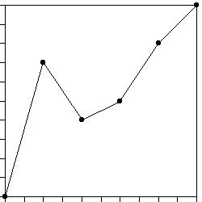
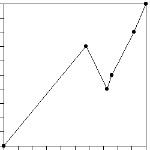

|  |
| 10. (a) All the dti are .2; dY1 = .7,
dY2 = -.3, dY3 = .1, dY4 = .3, and
dY5 = .2. |
| (b) All the dti are equal, not all the dYi are equal, so
not all the Hi = log(|dYi|)/log(dti)
are equal. Consequently, this generator is multifractal. |
| (c) To find the Trading time generators, first solve the equation |
| |dY1|D + |dY2|D +
|dY3|D + |dY4|D + |dY5|D = 1 |
| Here this becomes |
| .7D + 2(.3D) + .1D + .2D = 1 |
| The solution is D = 1.544. |
| Then the Trading time generators are dTi = |dYi|D. That is, |
| dT1 = .71.544 = .576 |
| dT2 = .31.544 = .156 |
| dT3 = .11.544 = .029 |
| dT4 = .31.544 = .156 |
| dT5 = .21.544 = .083 |
|
| (d) The turning points are |
| (dT1, dY1) = (.576, .7) |
| (dT1 + dT2, dY1 + dY2) = (.732, .4) |
| (dT1 + dT2 + dT3,
dY1 + dY2 + dY3) = (.761, .5) |
| (dT1 + dT2 + dT3 + dT4,
dY1 + dY2 + dY3 + dY3) = (.917, .8) |
|
|  |